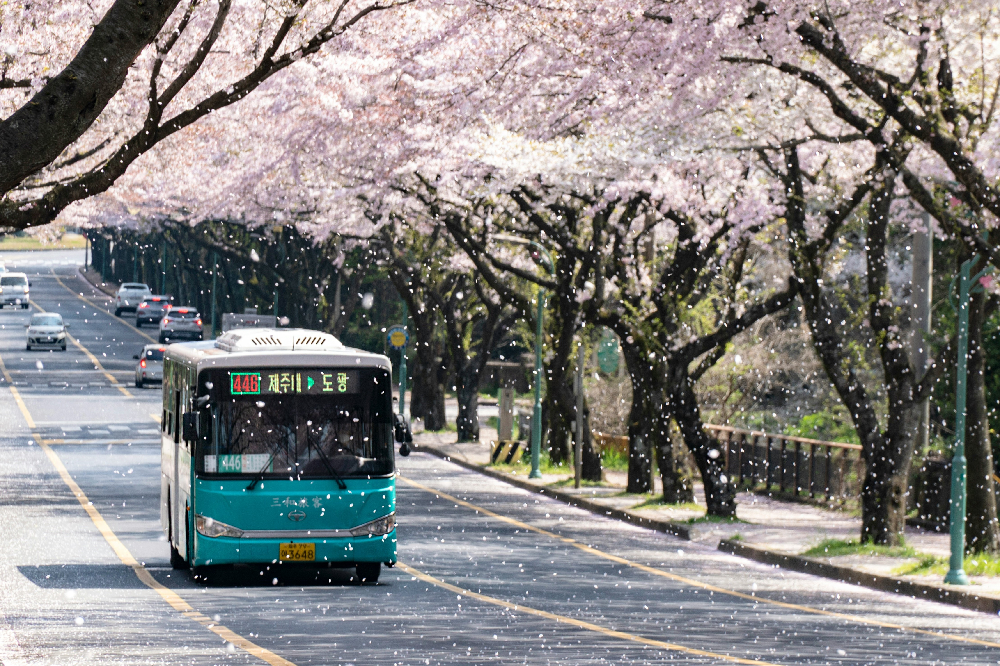
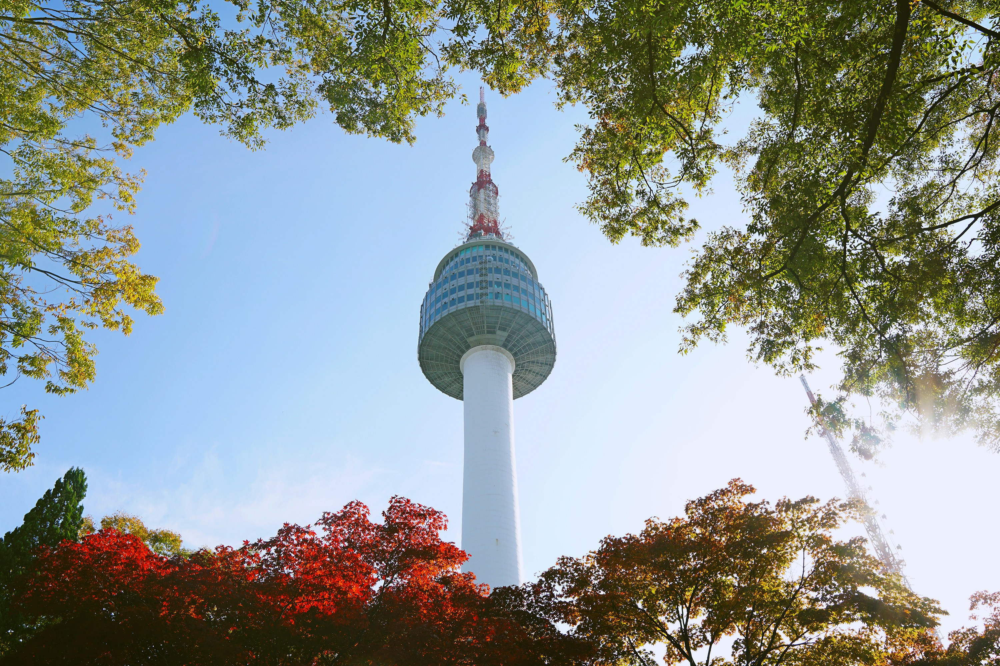

MY TOP 3 PLACE I WANT TO VISIT IS KOREA
 
I've always wanted to go to Korea because it's such an interesting place. Seoul, the capital city, is super modern with tall buildings and lots of technology. But there are also ancient temples and palaces to see, like Gyeongbokgung Palace. And the food in Korea is amazing, with yummy dishes like bibimbap and Korean barbecue. Outside of Seoul, there are other cool places like Jeju Island with its beautiful beaches and volcanic landscapes. Korea is also famous for K-pop music and Korean dramas that people all over the world love. Exploring Korea means experiencing a mix of old and new, trying delicious food, and maybe even seeing your favorite K-pop stars perform.